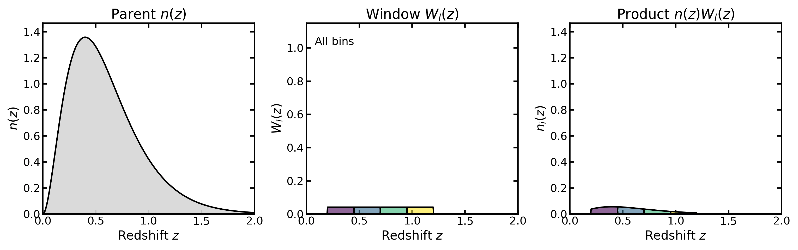
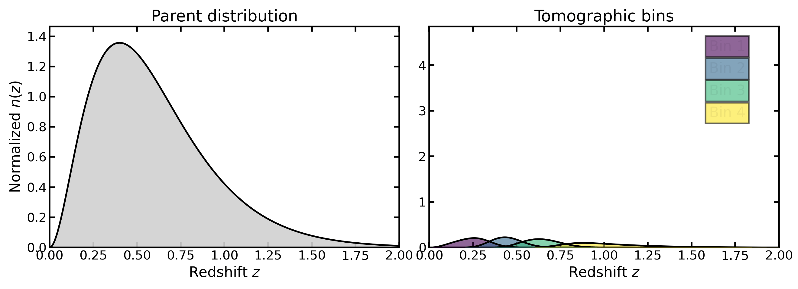
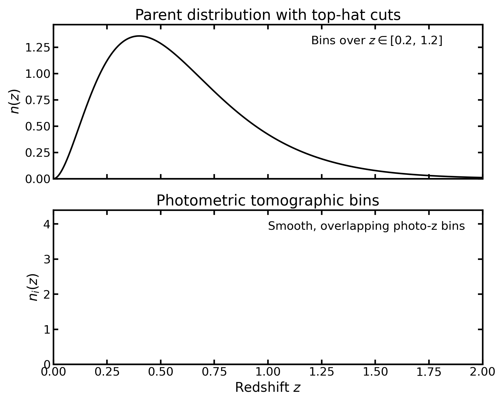
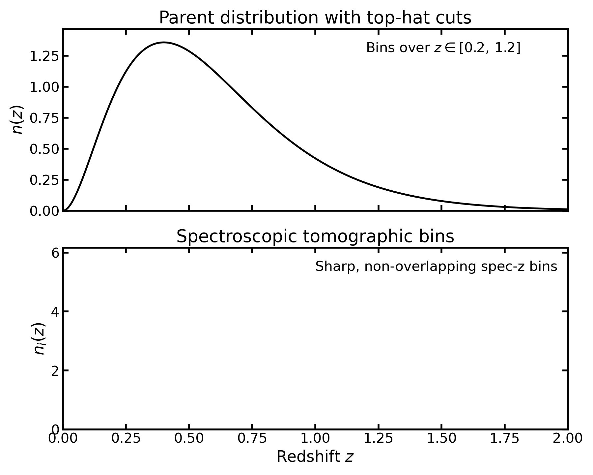
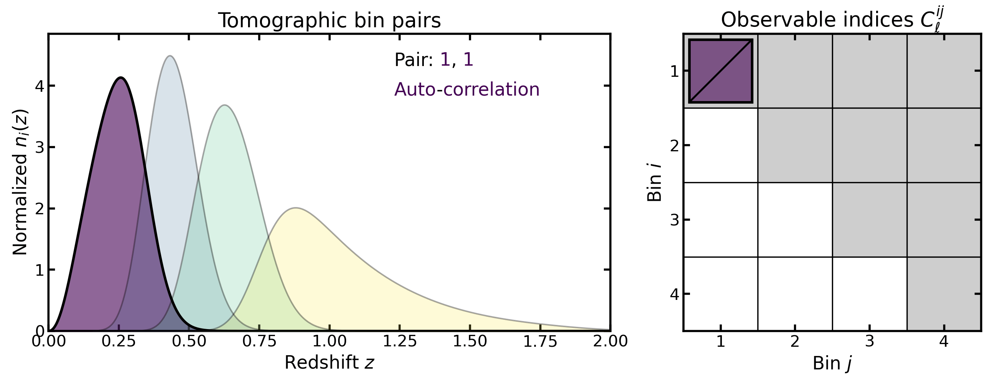
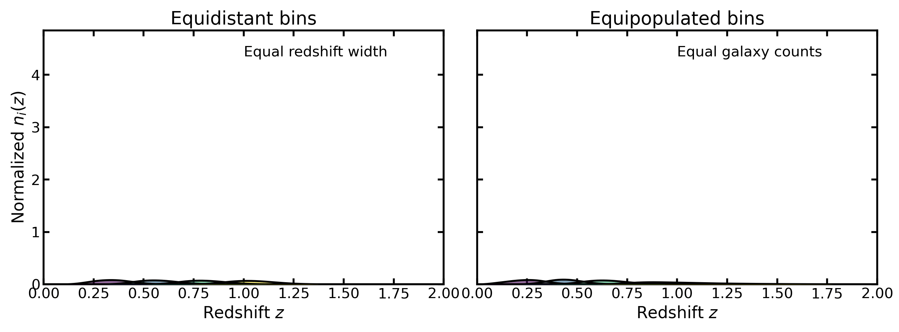

Tomography#
Tomography#
Tomography in cosmological analyses refers to the practice of subdividing a galaxy sample into redshift bins and measuring correlations both within and between these bins. By retaining partial redshift information, tomographic analyses recover information that would otherwise be lost in fully projected (two-dimensional) measurements.
Binny provides utilities for constructing such tomographic binning schemes and inspecting their statistical properties.
Tomographic construction#
At the core of tomography is the redshift distribution of galaxies, \(n(z)\), which describes the number density of objects (galaxies) as a function of redshift \(z\). A tomographic binning scheme partitions this distribution into a set of bins indexed by \(i = 1, \ldots, N_{\mathrm{bin}}\).
Each bin is defined through a window function \(W_i(z)\), such that the binned distribution becomes
Here
\(z\) denotes the redshift,
\(n(z)\) is the parent redshift distribution, describing the number density of galaxies as a function of redshift before binning,
\(W_i(z)\) is the window function for bin \(i\), specifying how galaxies at redshift \(z\) contribute to that bin,
\(n_i(z)\) is the resulting binned redshift distribution for bin \(i\),
\(N_{\mathrm{bin}}\) is the total number of tomographic bins in the analysis.
The window functions determine which galaxies contribute to each bin and how their contributions are weighted.
In the simplest case, the window function corresponds to a hard redshift cut,
where \(z_i^{\mathrm{min}}\) and \(z_i^{\mathrm{max}}\) denote the lower and upper redshift boundaries of bin \(i\).
More general window functions are often used in practice, for example when bins overlap or when galaxies contribute probabilistically to multiple bins.
{kind=link}

This illustrates the tomographic construction directly: a window \(W_i(z)\) selects part of the parent distribution \(n(z)\), yielding the binned distribution \(n_i(z) = n(z)\,W_i(z)\).
Applying this construction for a set of windows \(\{W_i(z)\}_{i=1}^{N_{\mathrm{bin}}}\) produces the full collection of tomographic bin curves \(n_i(z)\).
{kind=link}

A parent redshift distribution can therefore be partitioned into a set of tomographic bin curves \(n_i(z)\), each defined on the same redshift grid.
Normalization and bin overlap#
In many analyses, each tomographic bin curve \(n_i(z)\) is normalized independently so that
The bin curves therefore represent conditional redshift distributions rather than fractions of the parent population. As a consequence, the amplitude of a normalized bin curve may exceed that of the parent distribution \(n(z)\), since each bin is normalized independently.
In realistic photometric surveys the bin curves typically overlap in true redshift because galaxies are assigned to bins using photometric redshift estimates rather than precise spectroscopic measurements.
Spectroscopic vs photometric tomography#
Tomographic analyses are used in both spectroscopic and photometric surveys, though the practical implementation differs.
Photometric tomography#
In photometric surveys, redshifts are estimated from galaxy colors rather than spectral lines. The resulting bins are typically broader in true redshift and may overlap even when the nominal bin edges are well separated.
{kind=link}

Spectroscopic tomography#
In spectroscopic surveys, redshifts are measured with high precision. Tomographic bins can therefore be defined with minimal overlap in true redshift, and the corresponding window functions are often treated as sharply bounded.
{kind=link}

Why tomography is useful#
Tomographic binning allows cosmological correlations to be studied as a function of redshift, thereby probing the time evolution of large-scale structure. This is particularly important for observables that integrate information along the line of sight, such as galaxy clustering or weak gravitational lensing.
By splitting the galaxy sample into multiple bins, one gains access to
auto-correlations, measured between galaxies within the same redshift bin;
cross-correlations, measured between galaxies in different redshift bins.
{kind=link}

Tomography produces both auto-bin and cross-bin observables, corresponding to different pairs \((i,j)\) in the tomographic data vector.
The joint analysis of auto- and cross-correlations enables sensitivity to redshift-dependent physical effects such as the growth of structure, geometric distances, and galaxy bias evolution. These effects are partially degenerate in fully projected measurements but become separable when redshift information is retained.
Tomographic weak-lensing analyses were formalized by Hu (1999) [Hu1999], who showed that even coarse redshift binning can recover a large fraction of the available three-dimensional information.
Tomographic observables in different probes#
In practice, correlations often involve two distinct galaxy samples rather than a single one. A common example is galaxy–galaxy lensing, where galaxies are divided into a lens sample and a source sample, each with its own set of tomographic bins.
In this case, the primary observable is the cross-correlation between lens and source bins, which probes how foreground lens galaxies distort the shapes of background source galaxies through gravitational lensing. Depending on the analysis strategy, additional correlations may also be included, such as the auto-correlations of the lens sample (galaxy clustering) or the auto-correlations of the source sample (cosmic shear).
Different cosmological probes therefore make use of different subsets of the possible bin–pair correlations.
For example:
Cosmic shear uses correlations between source bins only. Because shear–shear correlations are symmetric, the pair \((i, j)\) is equivalent to \((j, i)\), so only one of the two needs to be computed.
Galaxy clustering uses correlations between lens bins, and these correlations are also symmetric in \((i, j)\).
Galaxy–galaxy lensing uses cross-correlations between lens and source bins. In this case the ordering matters: the pair \((\mathrm{lens}\,i, \mathrm{source}\,j)\) corresponds to the lensing signal, whereas \((\mathrm{source}\,j, \mathrm{lens}\,i)\) does not represent the same observable.
In combined analyses such as 3×2pt (the joint analysis of cosmic shear, galaxy–galaxy lensing, and galaxy clustering two-point correlations), several probes are used simultaneously. The resulting data vector may therefore contain a mix of auto- and cross-correlations between the tomographic bins of different samples.
Binning schemes#
A tomographic analysis requires a rule for defining the bin boundaries \(\{z_i^{\mathrm{min}}, z_i^{\mathrm{max}}\}\). Several binning strategies are commonly used.
Equidistant binning#
In equidistant binning, the redshift interval is divided into bins of equal width,
where \(\Delta z = (z_{\mathrm{max}} - z_{\mathrm{min}})/N_{\mathrm{bin}}\).
This scheme provides uniform redshift coverage and is frequently used when the analysis requires a simple geometric partition of the redshift range.
Equipopulated binning#
In equipopulated binning, the bin edges are chosen such that each bin contains approximately the same fraction of galaxies,
This approach produces bins with comparable statistical weight and is commonly used in photometric weak-lensing analyses.
Segmented or mixed binning#
More flexible schemes can be constructed by combining different binning strategies across redshift segments. For example, one may apply equal-number binning at low redshift while switching to equidistant bins at higher redshift.
Such hybrid approaches allow the binning scheme to adapt to features in the underlying redshift distribution while preserving control over bin boundaries.
{kind=link}

Equidistant binning divides the redshift range into equal-width intervals, whereas equipopulated binning places edges so that each bin contains a similar fraction of the parent galaxy sample.
Role of binning in cosmological analyses#
Tomographic bins define the set of observables used in a cosmological analysis. For example, a tomographic clustering measurement produces angular power spectra
for all combinations of bins \(i\) and \(j\).
Similarly, weak-lensing tomography produces shear correlations between source bins, while joint analyses may combine clustering, galaxy–galaxy lensing, and cosmic shear measurements across multiple bin pairs.
The number of bins and the choice of binning scheme therefore determine both the dimensionality of the data vector and the redshift resolution of the analysis.
In general, tomographic angular power spectra are computed as a projection of the three-dimensional matter power spectrum along the line of sight,
where
\(P(k,z)\) is the three-dimensional matter power spectrum,
\(\chi(z)\) is the comoving radial distance,
\(H(z)\) is the Hubble parameter,
\(W_i(z)\) and \(W_j(z)\) are the projection kernels for bins \(i\) and \(j\).
These kernels depend on the tomographic bin distributions \(n_i(z)\) returned by Binny. Different binning schemes therefore modify the kernels \(W_i(z)\) and ultimately change the structure of the observable correlations \(C_\ell^{ij}\).
For example, in galaxy clustering the kernel typically takes the form
where \(b_i(z)\) is the galaxy bias.
Binning in Binny#
Binny provides tools for constructing tomographic bins directly from a parent redshift distribution \(n(z)\). Several binning schemes are supported, including
equidistant bins (uniform redshift spacing),
equipopulated bins (approximately equal galaxy counts per bin),
mixed segmented schemes that combine multiple strategies.
The resulting bins are represented as curves \(n_i(z)\) on a shared redshift grid, allowing them to be analyzed, visualized, and compared consistently across different binning configurations.
Practical usage examples are provided throughout the documentation:
Examples of parent redshift models and analytic \(n(z)\) functions are shown in Parent n(z) models.
Methods for calibrating redshift distributions from simulations or mock catalogs are demonstrated in Parent n(z) from mocks.
Detailed examples of photometric tomography, including overlapping bins constructed from photometric redshift estimates, are provided in Photometric bins.
Examples of spectroscopic binning, where bins correspond to sharply defined redshift intervals, are shown in Spectroscopic bins.
Additional diagnostics for inspecting bin shapes, overlaps, and statistical properties are illustrated in Bin diagnostics and Bin summaries.
Survey-specific binning configurations used in forecasting studies can also be constructed using the utilities described in Survey presets.
References#
Hu, W. (1999), Power Spectrum Tomography with Weak Lensing, ApJL 522, L21–L24. https://arxiv.org/abs/astro-ph/9904153